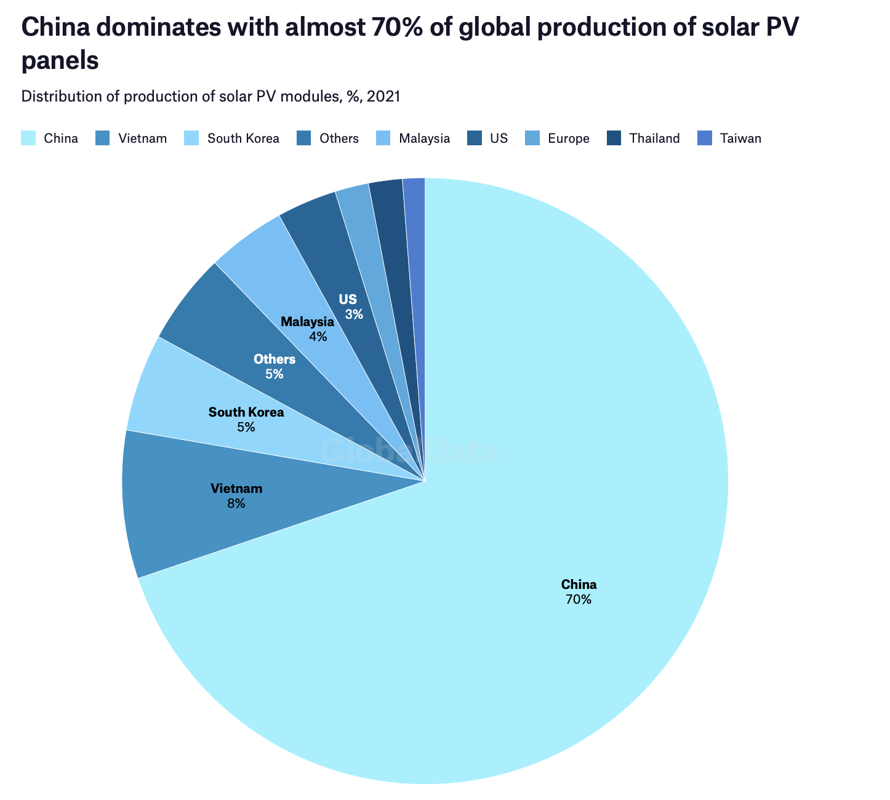
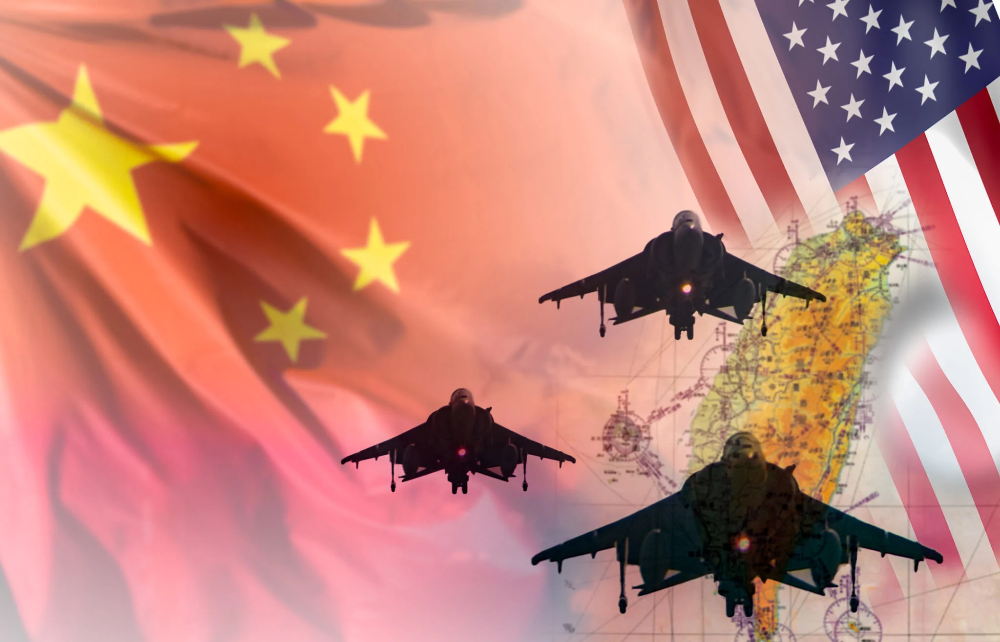

每当提起中美关系，人们总是从意识形态、经济、 和国际霸权等角度来讨论。然而，另一个息息相关且更加重要的问题却总是会被忽略掉。那就是全球变暖。作为世界两大碳排放国和经济体，中国和美国的决定与做法会在很大程度上影响人类保护自己家园的进程。
在世界各国的商讨下，巴黎协定制定了在2050之前完成零排放转型并将气温上升控制在1.5摄氏度以内的计划。可惜许多研究和报告指出，虽然巴黎协定对组织全球变暖有所成效，但还不足以将气温上升控制在1.5摄氏度以内。这说明我们需要继续努力，付出更多。中国美国理应身先士卒，引领世界。但是关系的恶化和各种不确定性让两国无法全身心投入到保护环境里来。许多努力和付出都因为各种原因被中断。在特朗普任期，美国曾短暂退出了巴黎协定。就在前不久，南希佩洛西的突然访台， 也导致中方停止与美国的各种合作，包括在全球变暖上的合作。说到台湾问题，双方更是因此增加军事化，而军事化恰恰会剧烈加快全球变暖。综上所述，中美该如何处理他们的关系对气候是至关重要的。
中国在世界供应链特别是清洁能源板块有绝对的占有率。中国是世界最大的电池，太阳能板和风力发电扇叶的生产商。这些零部件是许多行业，比如电动汽车，太阳能和风力发电以及存储的关键。而这些行业更是节能减排和化石燃料依赖转型的主要推动力。如果中国和美国可以达成合作关系，美国及其盟友可以享受到中国完善且低价的供应链。反之，其他供应链将无法满足美国的需求且会消耗大量财力，导致美国无法最大化节能减排的效率。
为了以有利于气候问题的方式解决由台湾问题引起的军事化现象, 中美必须达成协议，这样就不再需要军事力量来进行潜在的武统。中国和台湾之间的冲突本质上是中美之间的竞争。合作是解决此问题的唯一途径。以一种更和平的外交方式来解决有关台湾的分歧可以节省更多的资源和资金，来用于应对气候变化的斗争。
只有中美之间的合作关系才能让两个国家共同评估当前的情况，分享信息，并制定一系列计划和方法来维持应对气候变化的斗争。臭氧层保护的成功离不开1987年蒙特利尔议定书的参与。而蒙特利尔议定书有美国和苏联的参与。在气候转型方面取得的最大进展也是在巴黎协定的指导下实现的。巴黎协定之所以得以实现，是因为中国和美国在一年前达成了政治协议。这表明合作在长期内的重要性，因为所有重大进展都是通过协议和对全球政策的贡献得到鼓励的。
Gordon, Oliver. “Could a Chinese Invasion of Taiwan Derail the Net-Zero Transition?”
Gordon, Noah J. “Why US-China Rivalry Can Actually Help Fight Climate Change.”
Inwood, Joshua F. J., and James A. Tyner. “Militarism and the Mutually Assured Destruction of Climate Change.”